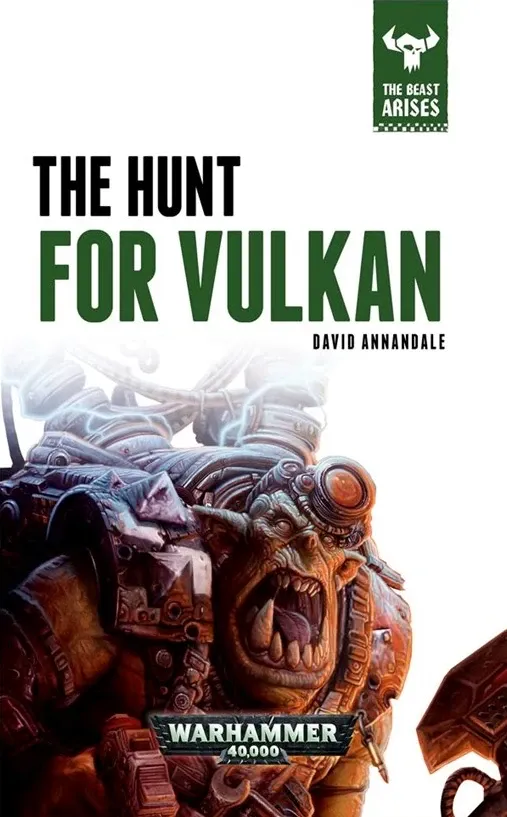
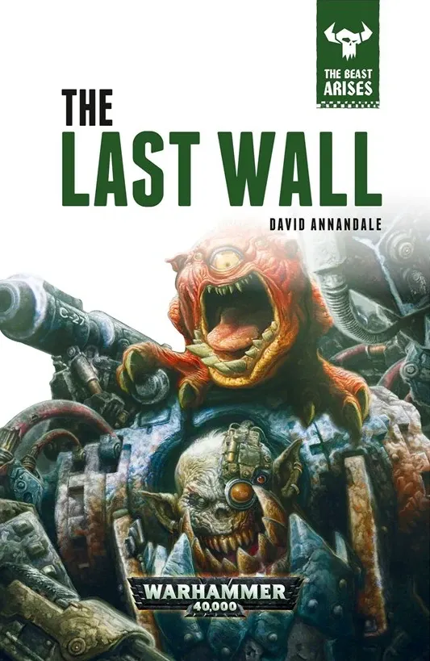
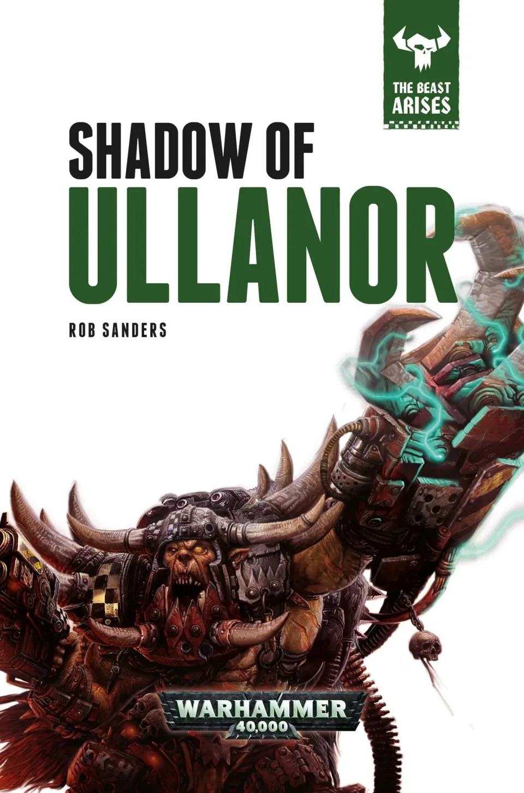
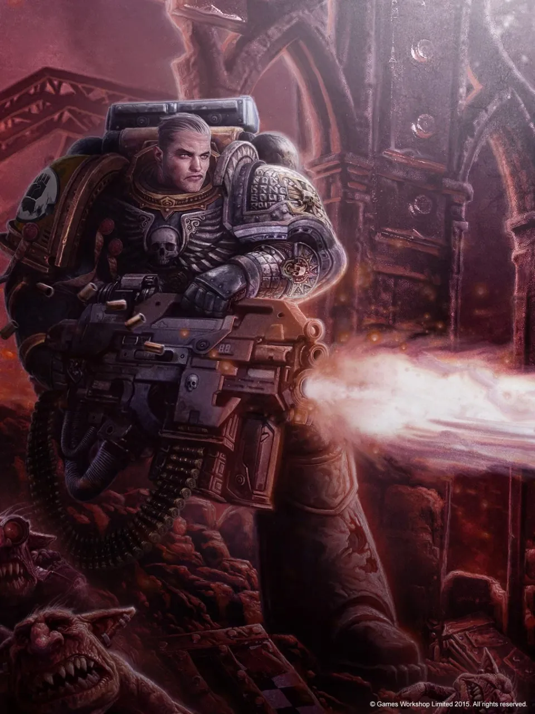

01ภาพรวม: จุดจบของยุคฟื้นฟู
หลัง Great Scouring จักรวรรดิเข้าสู่ช่วง Time of Rebirth ที่สงบสุขและรุ่งเรือง Legion ทรยศถูกขังใน Eye of Terror เผ่าต่างดาวถูกผลักไปที่ชายแดน กองเรือส่วนใหญ่ถูกส่งไปลาดตระเวนไกลจาก Terra ทุกคนคิดว่า Ork ไม่เคยฟื้นตัวจากความพ่ายแพ้ที่ Ullanor สมัย Great Crusade
ทุกคนคิดผิด ในปี 544.M32 WAAAGH! ที่ใหญ่ที่สุดในประวัติศาสตร์บุกจักรวรรดิ นำโดยขุนศึกที่ถูกเรียกเพียงว่า The Beast (เดอะ บีสต์) สงครามนี้ถูกเล่าละเอียดในนิยายชุด The Beast Arises 12 เล่ม (2016–2017)
Ork ของ The Beast ไม่ได้มีแค่จำนวน แต่มีระเบียบและเทคโนโลยีผิดธรรมชาติ ทั้งดวงจันทร์สงคราม (Attack Moon) ที่เทเลพอร์ตข้ามอวกาศได้ แส้แรงโน้มถ่วง และ Ork พันธุ์ใหม่ที่ตัวใหญ่ ฉลาด และพูดภาษามนุษย์ได้
02Ardamantua: Imperial Fists เหลือคนเดียว
สงครามเริ่มอย่างเงียบ ๆ บนดาว Ardamantua ห่างจาก Terra เพียงหกสัปดาห์ Imperial Fists ถูกส่งไปกำจัดเผ่าแมลงที่ชื่อ Chromes ซึ่งกำลังอพยพครั้งใหญ่เหมือนหนีอะไรบางอย่าง
ไม่นานดาวเกิดพายุแรงโน้มถ่วงอย่างประหลาด แล้วดวงจันทร์ของ Ork (Attack Moon) ก็ปรากฏขึ้นในวงโคจร ทำลายกองเรือกู้ภัยของจักรวรรดิ Ork ตัวใหญ่ผิดปกติลงมาสังหารทุกสิ่งบนพื้นดาว เมื่อการรบจบ Imperial Fists ทั้ง Chapter เหลือรอดเพียง 4 คน และสามในนั้นเสียชีวิตระหว่างการรักษา — เหลือเพียง กัปตัน Koorland ซึ่งกลายเป็น "Last Son of Dorn" (บุตรคนสุดท้ายของ Dorn)

03ดวงจันทร์ Ork เหนือ Terra
Attack Moon หลายดวง
ดวงจันทร์ Ork หลายดวงปรากฏทั่ว Segmentum Solar กลืนระบบดาวทั้งระบบ พลเมืองตายหลายพันล้าน ขณะที่สภา High Lords เอาแต่ทะเลาะกัน
กองทัพเรือสู้ตาย
Inquisition บีบให้ Lord High Admiral Lansung นำกองเรือกลับมาสู้ กองเรือทำลาย Attack Moon ที่ล้อมอู่ต่อเรือ Port Sanctus ได้ แต่ต้องแลกด้วยการโจมตีแบบพลีชีพ
Proletarian Crusade
Attack Moon ปรากฏเหนือ Terra เอง ผู้นำศาสนาจัด "สงครามครูเสดของประชาชน" ส่งพลเรือนนับล้านบนเรือทุกชนิดบุกดวงจันทร์ — แทบทั้งหมดถูกสังหาร
บุตรของ Dorn รวมตัว
Koorland ประกาศใช้ Last Wall Protocol เรียก Chapter ทุกแห่งที่สืบสายเลือดจาก Rogal Dorn — Black Templars, Crimson Fists, Excoriators, Fists Exemplar และอื่น ๆ — มารวมกันปกป้อง Terra เกือบเป็น Legion อีกครั้ง พวกเขาทำลาย Attack Moon เหนือ Terra ได้สำเร็จ
Koorland ขึ้นเป็น Lord Commander
เมื่อเห็นว่า High Lords ไร้ความสามารถ Koorland ร่วมมือกับสมาชิกสภาบางคนยึดอำนาจ และขึ้นเป็น Lord Commander of the Imperium
เกร็ดที่น่าสนใจ: ระหว่างสงคราม Iron Warriors กลุ่มหนึ่งและ Black Templars ต้องร่วมมือกันสู้ Ork เป็นครั้งแรกที่ลูกหลานของ Dorn กับ Perturabo รบเคียงข้างกันนับตั้งแต่ Great Crusade
04การกลับมาของ Vulkan
Inquisition แจ้งข่าวที่ไม่มีใครเชื่อ — Vulkan Primarch ของ Salamanders ที่หายไปพันกว่าปี ยังมีชีวิตอยู่และกำลังรบกับ Ork เพียงลำพังบนดาว Caldera เขาเป็น Perpetual คือผู้ที่ไม่มีวันตายจริง ฟื้นคืนชีพได้ทุกครั้ง Koorland นำทัพไปช่วย ทำลาย Attack Moon ที่กำลังดูดดาว Caldera และ Vulkan ยอมกลับมานำทัพ
ในขณะเดียวกัน Mechanicus ถูกจับได้ว่าแอบทดลองเทคโนโลยีเทเลพอร์ตของ Ork (ทดลองย้ายดวงจันทร์ Phobos ของดาวอังคารได้สำเร็จ) จากข้อมูลของพวกเขา จักรวรรดิพบว่าดาวแม่ของ The Beast คือ Ullanor — ดาวที่ Horus เคยได้ตำแหน่ง Warmaster


05ศึก Ullanor สามครั้ง
ครั้งที่ 1
Vulkan นำกองทัพใหญ่บุกเมือง Gorkogrod ที่ตั้งอยู่ตรงจุดที่จักรพรรดิเคยจัดพิธีฉลองชัยเมื่อ 1,500 ปีก่อน วิหารของ The Beast กลายเป็น Gargant ยักษ์ Vulkan ปล้ำ The Beast ตกลงไปในเครื่องปั่นพลังงานของ Ork และระเบิดหายไปทั้งคู่ — แต่เสียงสวดของ Ork ยังไม่หยุด
ครั้งที่ 2
Koorland นำทีมลอบสังหารบุกเข้าใจกลางเมือง และพบบัลลังก์หกที่ — The Beast ไม่ได้มีตัวเดียว แต่มี "Prime-Ork" หกตน ล้อเลียนจักรพรรดิกับ Primarch Koorland สังหารได้หนึ่งตน ก่อนที่ The Beast ตัวจริงจะปรากฏและเหยียบเขาจนตาย
ครั้งที่ 3
Maximus Thane แห่ง Fists Exemplar ใช้วิธีไม่ธรรมดา ยิงดาวเคราะห์น้อยถล่ม Ullanor แล้วนำ Sisters of Silence กับ Ork psyker ที่จับมาได้ สร้าง "WAAAGH! ย้อนกลับ" ที่ทำลายพลังของ Ork ทั้งดาว The Beast ถูกสังหารในที่สุด

06กำเนิด Deathwatch และ Ordo Xenos
หลังศึก Ullanor ครั้งแรก Koorland เสนอตั้งหน่วย Kill-Team ที่รวม Space Marine จากหลาย Chapter เพื่อกำจัดเป้าหมายสำคัญของ Ork สภาคัดค้านเพราะขัดกับหลัก Codex Astartes ที่ห้ามรวม Chapter แต่เมื่อ Attack Moon เหนือ Terra กลับมาทำงานอีก สภาก็ยอม
ทหารชุดแรกมาจากผู้รอดชีวิตของศึก Ullanor พวกเขาทาเกราะเป็นสีดำเพื่อไว้อาลัยพี่น้องที่ตาย กลายเป็น Deathwatch ที่อยู่ใต้การดูแลของ Inquisition ฝ่ายใหม่ — Ordo Xenos ผู้ดูแลภัยจากเผ่าต่างดาว

07ผลที่ตามมาและความลับของ Ullanor
- Imperial Fists ถูกสร้างใหม่ — Maximus Thane รวบรวมทหาร 1,000 นายจาก Chapter สายเลือด Dorn มาทาสีเป็น Imperial Fists และเป็น Chapter Master คนใหม่ ความจริงว่า Chapter เดิมสูญพันธุ์ถูกปิดเป็นความลับ
- จุดจบของยุคฟื้นฟู — จักรวรรดิบอบช้ำหนัก ความเชื่อว่าจะมีสันติภาพหายไป
- Ullanor กลายเป็น Armageddon — Thane สั่ง Mechanicus ทำลาย Ullanor แต่ Fabricator-General Kubik แอบเทเลพอร์ตดาวทั้งดวงไปซ่อนไว้ แล้วรายงานว่าโยนลงดวงอาทิตย์แล้ว ดาวถูกขูดเทคโนโลยี Ork ออกจนหมด ไม่กี่ร้อยปีต่อมามนุษย์มาตั้งรกรากและตั้งชื่อใหม่ว่า Armageddon — ดาวที่หมื่นปีต่อมากลายเป็นสมรภูมิของ Ork กับมนุษย์ซ้ำแล้วซ้ำเล่า (ดู สงคราม Armageddon)
08แหล่งข้อมูลและหมายเหตุ
เนื้อหาหน้านี้สรุปและแปลเป็นภาษาไทยจากบทความใน Warhammer 40k Wiki (Fandom) ซึ่งเรียบเรียงจากหนังสือ Codex, หนังสือชุด Horus Heresy ของ Forge World และนิยาย Black Library ด้านล่างนี้ (ตรวจสอบ ต.ค. 2026)
เนื้อเรื่อง Warhammer ถูกเขียนเพิ่มและแก้ไขมาตลอดหลายสิบปี ปี จำนวน และรายละเอียดบางจุดต่างกันไปตามหนังสือแต่ละเล่ม หน้านี้ใช้ฉบับที่แหล่งอ้างอิงส่วนใหญ่ยอมรับ และบอกไว้เมื่อมีหลายฉบับ